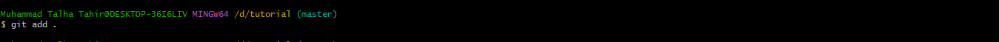

Git Tutorial
What is a Git/Github?
Git is a free and open source software for version controll. It is one the most commonly used version controll system used.
Git tracks the changes you make to your files. Git is a software that runs locally, your files and histroy are stored
on your computer. While GitHub is an online git hosting platform.
Initializing a local git repo
In order to get started with git you need to create a local git repo. For that you must have git installed on your computer, you can do so by downloading and installing git from the following link
Download Git
Create a local git repo by running the following command in command prompt.
git init

Tracking a file
In order for git to start tracking changes in a certain file we must first add it to the git. The following command can be used to do so.
git add [FileName]
Or
git add .

Status
This command shows the untrack changes and un added file that can added using the above command and then be commited.
git status
Saving Chnages Locally
Any changes made to the files that are shown through git status can be saved localy using the following command given below.
-m here stands for message, a message is discription that represents the changes that are made.
git commit -m "[a line explaing the changes you made]"
Saving Chnages Locally
Any changes made to the files that are shown through git status can be saved localy using the following command given below.
-m here stands for message, a message is discription that represents the changes that are made.
git commit -m "[a line explaing the changes you made]"